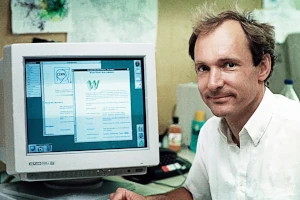

O HTML não nasceu como a linguagem complexa que conhecemos hoje. Sua história é marcada pela necessidade de comunicação e pela constante evolução para tornar a web um ambiente acessível, rico e organizado.
1. A Ideia Original ( - )

Tudo começou no CERN com o físico britânico Tim Berners-Lee. A ideia era criar um sistema que permitisse aos cientistas compartilhar documentos. Em , ele publicou o primeiro documento formal descrevendo as tags HTML.
2. A Evolução e a Guerra dos Navegadores (Anos 90)
Com a popularização da web, a demanda por páginas mais atraentes explodiu.
- HTML 2.0 (): Trouxe a padronização inicial.
- HTML 3.2 e 4.01 ( - ): Marcada pela guerra dos navegadores. Tabelas eram usadas para layout, tornando o código caótico.
3. A Busca por Padrões (Anos 2000)
Para consertar a bagunça, o W3C criou o XHTML. A grande lição dessa fase foi a separação de responsabilidades entre estrutura (HTML) e visual (CSS).
4. A Revolução do HTML5 e a Web Semântica ()
O HTML5 mudou o jogo. Trouxe suporte nativo para áudio e vídeo e introduziu a Semântica, dando significado real para navegadores e leitores de tela em vez de usarmos apenas divs genéricas.
5. O Estado Atual: Living Standard
Hoje, o HTML não recebe mais versões numeradas. Ele é mantido como um Living Standard (Padrão Vivo), atualizado continuamente de forma fluida.